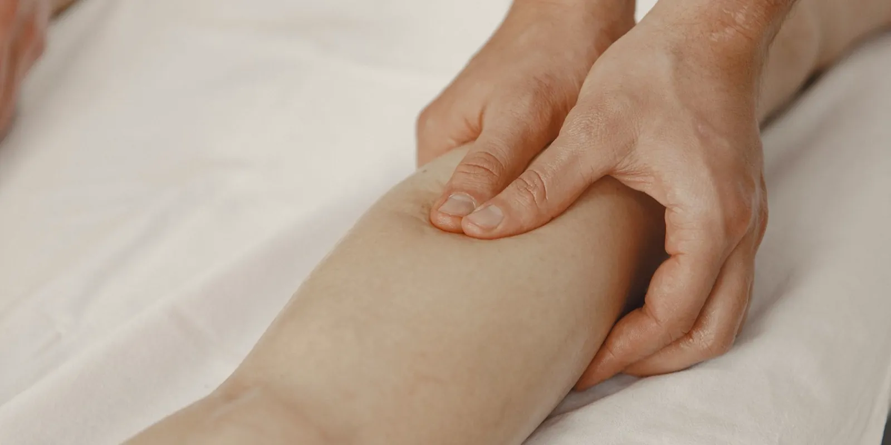

Trombosis venosa: síntomas y señales de alarma que no debes ignorar
La trombosis venosa puede empezar con una simple hinchazón en una pierna, pero en algunos casos es una urgencia médica. Aquí te explicamos qué es, sus factores de riesgo y, sobre todo, qué señales no debes dejar pasar.

Si llegaste hasta aquí buscando trombosis venosa síntomas, seguramente algo te tiene inquieta: una pierna hinchada, un dolor que no cede o una sensación de calor que antes no sentías. Es una preocupación válida y vale la pena resolverla con información clara. La trombosis venosa es la formación de un coágulo (trombo) dentro de una vena; en muchos casos es tratable, pero hay señales que requieren atención médica inmediata. En este artículo te contamos qué es, por qué aparece y —lo más importante— cuándo no debes esperar a que "se pase sola".
¿Qué es la trombosis venosa?
La trombosis venosa ocurre cuando la sangre se coagula dentro de una vena y forma un trombo que dificulta o bloquea el flujo normal. Existen dos tipos principales, y vale la pena distinguirlos:
- Trombosis venosa profunda (TVP): el coágulo se forma en una vena profunda, casi siempre de la pierna (pantorrilla o muslo), aunque también puede afectar la pelvis o, con menos frecuencia, el brazo.
- Trombosis venosa superficial (tromboflebitis): el coágulo aparece en una vena justo debajo de la piel. Suele ser menos grave, con una inflamación más localizada, y en la mayoría de los casos mejora en una o dos semanas.
La diferencia no es solo de ubicación: la TVP puede complicarse si parte del coágulo se desprende y viaja hasta los pulmones, lo que se conoce como tromboembolismo pulmonar, una urgencia médica que puede ser mortal. Por eso es tan importante aprender a reconocer los síntomas de cada tipo.
Trombosis venosa: síntomas que debes reconocer
Síntomas de la trombosis venosa profunda
El signo más característico es que aparece en una sola pierna, no en las dos. Presta atención a:
- Hinchazón (edema) que aparece de forma relativamente rápida en una pierna.
- Dolor o sensibilidad, que muchas veces empieza en la pantorrilla y aumenta al caminar o estar de pie.
- Piel caliente al tacto en la zona afectada.
- Enrojecimiento o cambio de color de la piel.
- En algunos casos, venas superficiales más visibles de lo habitual.
Es importante saber que la trombosis venosa profunda también puede no dar ningún síntoma claro, lo que hace todavía más relevante conocer tus factores de riesgo.
Síntomas de la trombosis venosa superficial
En la tromboflebitis, el trayecto de la vena afectada suele sentirse duro, como un cordón bajo la piel, con enrojecimiento, calor y dolor localizado a lo largo de esa vena. A diferencia de la TVP, la hinchazón generalizada de la pierna es menos frecuente.
¿Qué aumenta el riesgo de trombosis venosa?
No todas las personas tienen el mismo riesgo de sufrir una trombosis. Este aumenta cuando se combinan varios de estos factores:
- Inmovilidad prolongada: reposo en cama, hospitalización o pasar muchas horas sentada.
- Cirugía reciente, sobre todo de cadera, rodilla o abdomen.
- Viajes largos (más de 4 horas) en avión, bus o carro, por permanecer sentada sin moverte.
- Embarazo y posparto, porque aumenta la presión sobre las venas de la pelvis y las piernas.
- Uso de anticonceptivos hormonales o terapia hormonal de reemplazo.
- Cáncer y algunos de sus tratamientos.
- Antecedentes personales o familiares de trombosis.
- Tabaquismo.
- Obesidad o sobrepeso.
- Edad mayor a 60 años, aunque puede presentarse a cualquier edad.
Si tienes varios de estos factores —por ejemplo, un viaje largo después de una cirugía, o anticonceptivos junto con sobrepeso— tu riesgo puede ser mayor. Coméntaselo a tu médico antes de situaciones de alto riesgo, como una cirugía programada o un vuelo largo.
La combinación de hinchazón, dolor y calor que aparece de un día para otro en una sola pierna no es algo para "esperar a ver si mejora". Es una de las señales de alarma de trombosis más importantes: acude de inmediato a un servicio de urgencias, no esperes a agendar una cita.
Cuándo es una urgencia: no esperes una cita
Hay un grupo de síntomas frente a los que debes actuar de inmediato: ve a un servicio de urgencias, no agendes una cita para más adelante.
- Hinchazón súbita, dolor y calor en una sola pierna (no en ambas).
- Enrojecimiento que aparece de forma repentina en una pierna, junto con dolor.
- Dificultad para respirar de aparición súbita.
- Dolor en el pecho, sobre todo si empeora al respirar hondo o toser.
- Tos con sangre.
- Palpitaciones o sensación de que el corazón late muy rápido, en especial junto con los síntomas anteriores.
Los síntomas respiratorios y de pecho pueden indicar un tromboembolismo pulmonar, es decir, que parte del coágulo llegó a los pulmones. Es una urgencia médica que puede poner en riesgo la vida y necesita atención inmediata en un servicio de urgencias, no información de internet ni esperar "a ver cómo sigue".
¿Cómo se diagnostica la trombosis venosa?
El examen principal es el eco doppler venoso, un estudio no invasivo con ultrasonido que permite ver el flujo de sangre en las venas y detectar si hay un coágulo. Es indoloro y rápido, y es el estándar para confirmar o descartar una trombosis. En algunos casos se complementa con un examen de sangre (dímero D).
En Seravena, la valoración de salud vascular incluye este tipo de estudios para entender qué está pasando en tus venas y orientar los siguientes pasos junto a tu médico.
¿Qué se puede hacer frente a la trombosis venosa?
El manejo de la trombosis venosa lo define el equipo médico según cada caso, el tipo de trombo y los factores de riesgo de la persona: no existe una receta única, y estas decisiones siempre las toma un profesional de la salud. En general, el abordaje incluye seguimiento médico, medidas para favorecer la circulación y, en algunos casos, tratamiento dirigido a evitar que el coágulo crezca.
Lo que sí puedes hacer desde ya es reducir los factores de riesgo modificables: moverte cada hora en viajes largos, mantenerte activa tras una cirugía según indique tu médico, cuidar tu peso y no fumar. Si además convives con insuficiencia venosa u otras molestias circulatorias, una valoración a tiempo puede ayudar a identificar riesgos antes de que se conviertan en un problema mayor.
Conocer los síntomas de la trombosis venosa te da algo muy valioso: la capacidad de actuar rápido cuando de verdad importa. Si tienes dudas sobre tus piernas, hinchazón que no es la de siempre, o quieres entender mejor tu riesgo circulatorio, agenda una valoración con nuestro equipo.
Preguntas frecuentes
¿Cuáles son los síntomas de una trombosis venosa profunda?
El signo más característico es que aparece en una sola pierna, no en las dos. Conviene prestar atención a la hinchazón que aparece de forma relativamente rápida, al dolor o sensibilidad que suele empezar en la pantorrilla y aumenta al caminar, a la piel caliente al tacto y al enrojecimiento o cambio de color.
¿Cuándo una trombosis venosa es una urgencia?
Debes ir a un servicio de urgencias, sin esperar una cita, si tienes hinchazón súbita con dolor y calor en una sola pierna, dificultad para respirar de aparición súbita, dolor en el pecho que empeora al respirar hondo o toser, o tos con sangre.
¿Cómo se diagnostica la trombosis venosa?
El examen principal es el eco doppler venoso, un estudio no invasivo con ultrasonido que permite ver el flujo de sangre en las venas y detectar si hay un coágulo. Es indoloro y rápido, y en algunos casos se complementa con un examen de sangre llamado dímero D.